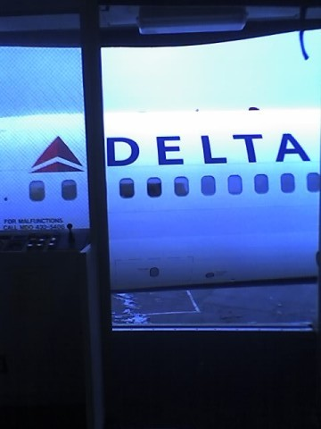

First Delta plane serviced! / End of an Era!
aka: My first picture downloaded from my cell phone!
A Delta plane at a Northwest gate
of the Seattle Tacoma International airport (aka SEA, aka SeaTac).
My sister sent me the above picture without any associated text or any other
information including a subject line. I received the message on my cell
phone early Christmas morning 2008.
Later on I called my sister and she told me that I had correctly guessed
the message she had sent me and the context on my first try. It was easy
partly because earlier that same month we had vacationed together in Kauai,
Hawaii along with her oldest son and I had spent time at her new house
afterwards.
My sisters story is that she will complete 30 years of service with
Northwest Airlines in April of 2009 except that she doesn't know
if it will be recognized. Northwest Airlines merged with Delta and
she is not sure if enough of Northwest Airlines will be left to give
her the traditional 30 year pin with associated ceremony.
The rest of the story is that this picture is taken from a vantage point
that few have access to. The picture was taken from the extensible walkway
after it had been backed away from the plane which had finished boarding.
In my sisters words;
"I began working the flight at pre dawn.
So in the darkness when I walked down to open the aircraft door to let my
crew board I could see nothing more than the shape of an aircraft,
and then I returned to my counter that faces away from the window
to continue to service passengers. So it wasn't until an hour later
that I was preparing to head back down to the aircraft with the final
paperwork to close the door and send it on its way to Detroit that
I realized it was a Delta airplane."
It was after the walkway was backed away from the plane that my sister decided
to use a moment to snap a picture with her cell phone and send it to me.
When I talked to her a few hours later she admitted
that she may have heard comments from passengers about the plane,
but was busy being a Northwest Airlines terminal employee helping passengers
boarding the plane. It was extra busy because of the snow and weather related
additional considerations that affected the Christmas flying travel of many
in 2008.
My sister is not an advanced user of all the latest communications
technology. I have to admit that I do not text more than I call
and seldom send pictures.
I have had my RAZR for at least two and one half years,
and I remember initially investigating the ability to
connect it to a PC and related features. My memory
tells me I found answers in the $50.00 range but
never pursued it any further.
So this picture was so important that I figured out how to get it
off of my phone and once I did I decided to create this page.
I will edit it as necessary based on any comments I receive.
The quote from my sister was added after my sister saw the first version
of the page gave me some input. Her comments also included
"That is very cool, I love it. ...
Thank you, I can't wait to show this to some of my co-workers."